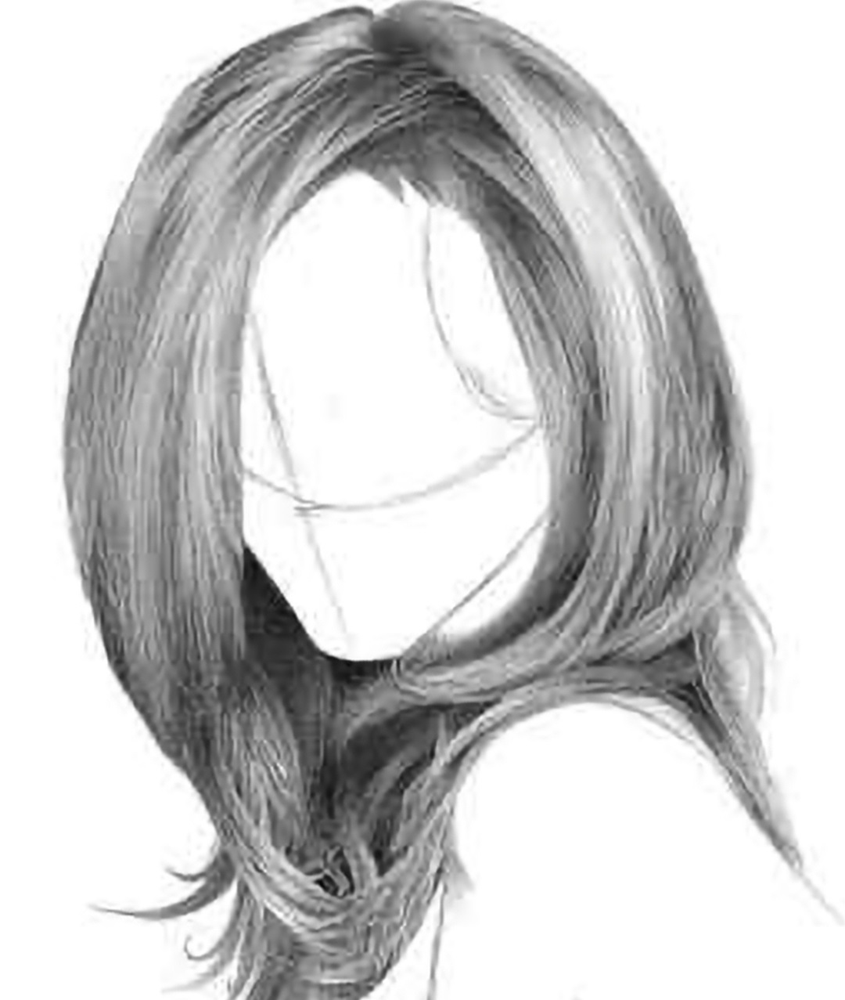
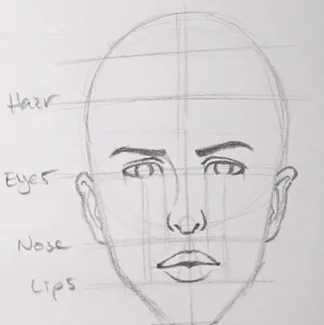
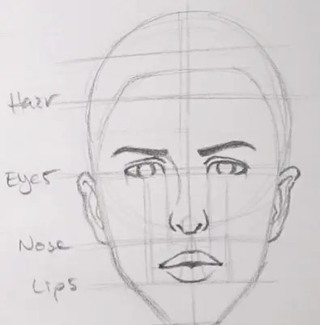
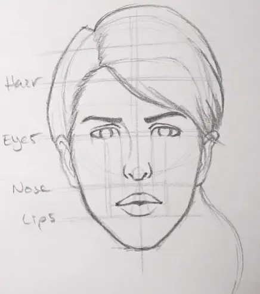
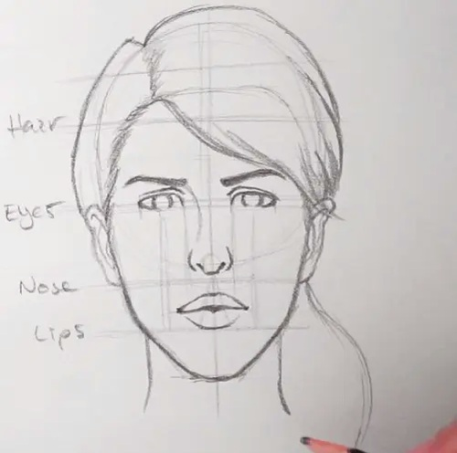
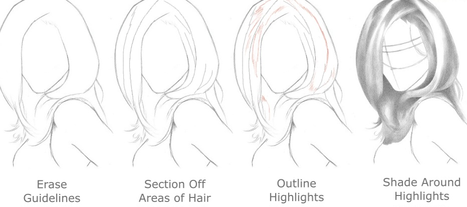
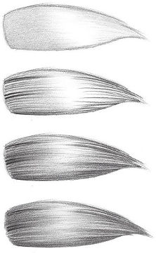

Course #5: Drawing the Hair
Welcome to this course on drawing hair! With your skills in drawing facial features and proportions, you’re ready to bring life and movement to your portraits by mastering hair. By the end of this lesson, you’ll be able to draw hair as shown below. Let’s jump in!

Step #1: Start with a basic shape

Begin by drawing the head and structure of the face as a foundation. This helps you visualize where the hair will go and how it will fit with the head.
Step #2: Determine the hairline

Identify where the hairline begins and draw it. The hairline typically follows a smooth curve along the forehead, so draw it lightly at first to give yourself flexibility for adjustments.
Step #3: Add your chosen hairstyle

This is where you can get creative! For this tutorial, we will use a simple hairstyle, but feel free to experiment with different styles. Look up online tutorials for more specific styles like long, curly, straight, or layered hair.
Step #4: Extend the hair

Once you've drawn the main body of the hair, you can extend it down over the neck or hide the ends behind the neck. This helps create a natural look and adds movement to the hairstyle.
Step #5: Shading and Defining Hair Structure

Start by erasing any unnecessary guidelines that were used to help define the shape of the hair. Next, divide the hair into sections based on how it naturally flows, considering the direction and texture of the strands. This will help keep your work organized and make shading easier. Once the sections are clear, outline where the highlights should fall, focusing on areas where light would naturally hit, such as the top of the head or around the face. With these highlights in mind, begin shading around them, using darker strokes to add depth and dimension. Remember that areas farther from the light source will be darker, so emphasize shadows in these areas to create the illusion of volume and texture, while keeping the highlights lighter and more defined.
Step #6: Add darker lines

To make the hair look even more defined, add darker lines around the highlights. This creates contrast and depth, giving the hair a more realistic look.
Step #7: Final touches
Once you've added shading and details, step back and assess. Smooth out any harsh lines and ensure the hair looks cohesive. You can also darken certain sections for added depth and texture.
Congratulations on completing all five courses in MasterFace! You've made incredible progress, and now it's time to take your skills even further. Head over to the Resources page, where you'll find five curated YouTube videos for each course, packed with additional tips, techniques, and insights to deepen your knowledge. These videos are designed to help you refine your skills and stay inspired as you continue to grow as an artist. Keep up the great work and keep learning!